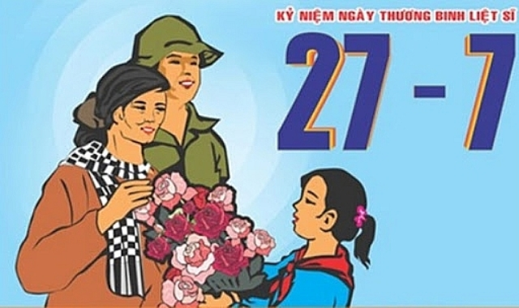

Ý Nghĩa Của Ngày Thương Binh Liệt Sĩ
Ngày Thương binh Liệt sỹ có ý nghĩa lịch sử, chính trị, xã hội sâu sắc, đó là: Truyền thống “hiếu nghĩa bác ái”, lòng quý trọng và biết ơn của Đảng, Nhà nước và nhân dân ta đối với những người đã hi sinh, cống hiến vì độc lập, tự do và thống nhất của Tổ quốc, vì hạnh phúc của nhân dân; qua đó phát huy tinh thần yêu nước, củng cố và bồi đắp niềm tin vào sự nghiệp cách mạng mà Đảng, Bác Hồ và nhân dân ta đã lựa chọn..
Tôn vinh các anh hùng, liệt sỹ, thương binh và người có công; khẳng định sự cống hiến, hy sinh của họ cho độc lập, tự do của dân tộc, cho hạnh phúc của nhân dân là vô giá. Việc chăm sóc thương binh, bệnh binh, gia đình liệt sỹ và người có công là vinh dự, là trách nhiệm của các cấp, các ngành, tổ chức chính trị - xã hội và của mọi người, của thế hệ hôm nay và mai sau. Đảng, Nhà nước và nhân dân ta trân trọng đánh giá cao những cống hiến, hy sinh to lớn của đồng bào, chiến sỹ đối với Tổ quốc; đồng thời cũng luôn chú trọng giáo dục ý thức trách nhiệm, nghĩa vụ công dân và lòng biết ơn sâu sắc của các tầng lớp nhân dân, của các thế hệ cách mạng đối với thương binh, liệt sỹ và người có công với cách mạng.
Hoàn cảnh ra đời của Ngày Thương binh Liệt sỹ
Cách mạng tháng Tám năm 1945 thành công, nước Việt Nam Dân chủ cộng hòa (nay là nước CHXHCN Việt Nam) ra đời chưa được bao lâu thì thực dân Pháp quay lại xâm lược nước ta một lần nữa. Với tinh thần “.... thà hy sinh tất cả, chứ nhất định không chịu mất nước, nhất định không chịu làm nô lệ”, quân và dân ta đã anh dũng chiến đấu chống lại quân xâm lược. Trong những năm đầu của cuộc kháng chiến quyết liệt chống thực dân Pháp, nhiều đồng bào, chiến sỹ đã ngã xuống, hy sinh một phần xương máu trên các chiến trường. Với truyền thống đạo lý “uống nước nhớ nguồn”, “Đền ơn đáp nghĩa”, Đảng, Chính phủ, Bác Hồ và nhân dân ta đã dành tất cả tình thương yêu cho các chiến sĩ và đồng bào đã vì độc lập, tự do của Tổ quốc mà bị thương hoặc hy sinh.
Đầu năm 1946, Hội giúp binh sĩ bị nạn ra đời ở Thuận Hóa (Bình Trị Thiên), rồi đến Hà Nội và một số địa phương khác... Sau đó ít lâu được đổi thành Hội giúp binh sĩ bị thương. Ở Trung ương có Tổng Hội và Chủ tịch Hồ Chí Minh được bầu là Chủ tịch danh dự của Tổng Hội.
Ngày 28-5-1946, Hội giúp binh sĩ bị nạn tổ chức một cuộc nói chuyện quan trọng tại Nhà hát Lớn Hà Nội để kêu gọi mọi người gia nhập Hội và hăng hái giúp đỡ các chiến sỹ bị thương, Chủ tịch Hồ Chí Minh đã đến dự.
Ngày 17-11-1946, cũng tại Nhà hát Lớn Hà Nội, Hội Liên Hiệp Quốc dân Việt Nam đã tổ chức lễ xung phong “Mùa đông binh sỹ”, mở đầu cuộc vận động “Mùa đông binh sỹ” trong cả nước để giúp chiến sỹ trong mùa đông giá rét. Chủ tịch Hồ Chí Minh đã đến dự buổi lễ và Người đã cởi chiếc áo đang mặc để tặng binh sỹ.
Khi cuộc kháng chiến toàn quốc bùng nổ, ngày 19-12-1946, theo Lời kêu gọi toàn quốc kháng chiến của Chủ tịch Hồ Chí Minh, nhân dân cả nước đã nhất tề đứng dậy kháng chiến với tinh thần “Quyết tử cho Tổ quốc quyết sinh”. Số người bị thương và hy sinh trong chiến đấu tăng lên, đời sống của chiến sỹ, nhất là những chiến sỹ bị thương gặp nhiều khó khăn, thiếu thốn.
Trước tình hình trên, Đảng và Nhà nước ta đã đưa ra nhiều quyết định với những chính sách quan trọng về công tác thương binh, liệt sỹ, góp phần ổn định đời sống vật chất và tinh thần cho thương binh, gia đình liệt sỹ.

Chủ Tịch Hồ Chí Minh
Ngày 16-2-1947, Chủ tịch Hồ Chí Minh đã chính thức ký Sắc lệnh số 20/SL, quy định chế độ hưu bổng, thương tật và tiền tuất tử sĩ. Đây là văn bản pháp quy đầu tiên khẳng định vị trí quan trọng của công tác thương binh, liệt sỹ đối với cuộc kháng chiến và sự quan tâm của Đảng, Nhà nước, Chính phủ đến thương binh, bệnh binh và gia đình liệt sỹ.
Tháng 6-1947, đại biểu của Tổng bộ Việt Minh, Trung ương Hội phụ nữ Cứu quốc, Trung ương Đoàn thanh niên Cứu quốc, Cục Chính trị quân đội quốc gia Việt Nam, Nha Thông tin Tuyên truyền và một số địa phương đã họp tại Đại Từ (Bắc Thái) để bàn về công tác thương binh, liệt sỹ và thực hiện Chỉ thị của Hồ Chủ Tịch chọn một ngày nào đó làm ngày Thương binh Liệt sỹ. Tại cuộc họp này các đại biểu đã nhất trí chọn ngày 27 tháng 7 là ngày “Thương binh toàn quốc”. Từ đó hàng năm cứ vào dịp này, Chủ tịch Hồ Chí Minh đều gửi thư, quà thăm hỏi, động viên, nhắc nhở mọi người phải biết ơn và hết lòng giúp đỡ thương binh, gia đình liệt sỹ. Đặc biệt, từ sau Chiến thắng Điện Biên Phủ, Chính phủ và Chủ tịch Hồ Chí Minh càng quan tâm hơn đến công tác thương binh, liệt sỹ.
Từ tháng 7 năm 1955, Đảng và Nhà nước ta quyết định đổi “Ngày Thương binh toàn quốc” thành “Ngày Thương binh, Liệt sỹ” để ghi nhận những hy sinh lớn lao của đồng bào, chiến sĩ cả nước cho chiến thắng vẻ vang của toàn dân tộc.
Sau ngày giải phóng miền Nam, thống nhất Tổ quốc, theo Chỉ thị 223/CT-TW ngày 8-7-1975 của Ban Bí thư Trung ương Đảng, từ năm 1975, ngày 27 tháng 7 hằng năm chính thức trở thành “Ngày Thương binh, Liệt sỹ” của cả nước.
Mỗi năm cứ đến “Ngày Thương binh, Liệt sỹ” nhất là vào dịp kỷ niệm năm tròn, toàn Đảng, toàn dân và toàn quân ta lại tổ chức nhiều hoạt động thiết thực, đầy tình nghĩa chăm sóc thương binh, gia đình liệt sỹ, người có công với cách mạng.